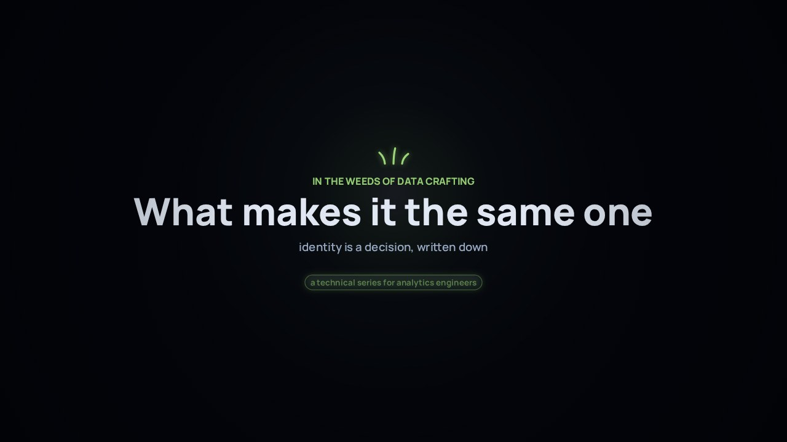

← Anterior · Película 3 de 9
Qué lo hace el mismo
Una estudiante, tres claves, y alguien que se le parece. Las reglas unen la mayoría; una persona decide el resto, y la decisión se vuelve datos y una prueba.
Temas › En las entrañas del oficio de datos
Ocho situaciones que un analytics engineer enfrenta de verdad: créditos que se duplicaron, un número del censo para la app, un informe que cambió con un cambio de nombre, un retiro registrado después de publicar, cortes mensuales, una versión vigente antes de ser cierta, cuatro arreglos para filas multiplicadas, y dos versiones que se solapan. Decide qué harías; cada respuesta explica por qué. Tus respuestas quedan en este navegador.
Película 4 de 9.

← Anterior · Película 3 de 9
Una estudiante, tres claves, y alguien que se le parece. Las reglas unen la mayoría; una persona decide el resto, y la decisión se vuelve datos y una prueba.
Siguiente · Película 5 de 9 →
Cada brecha recibe una decisión. Prométela en un contrato; demuéstrala con una prueba, escrita antes del código que comprueba.